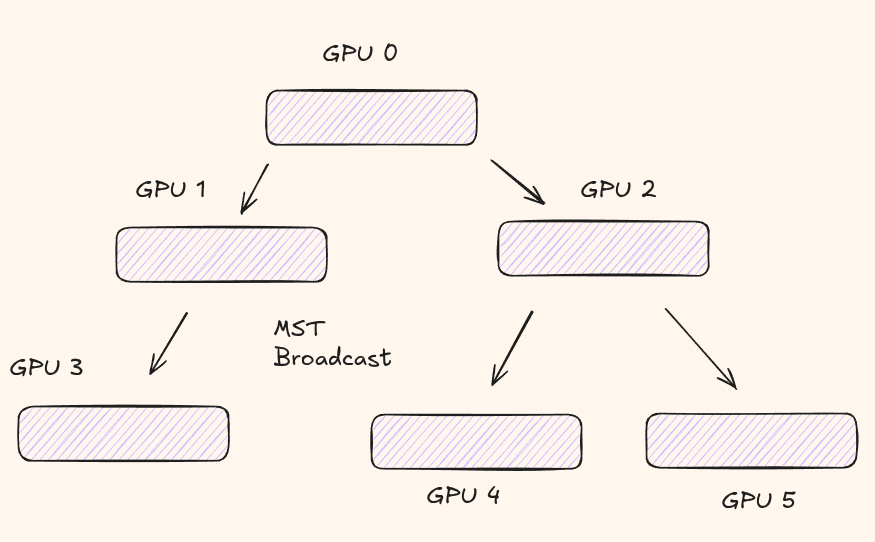
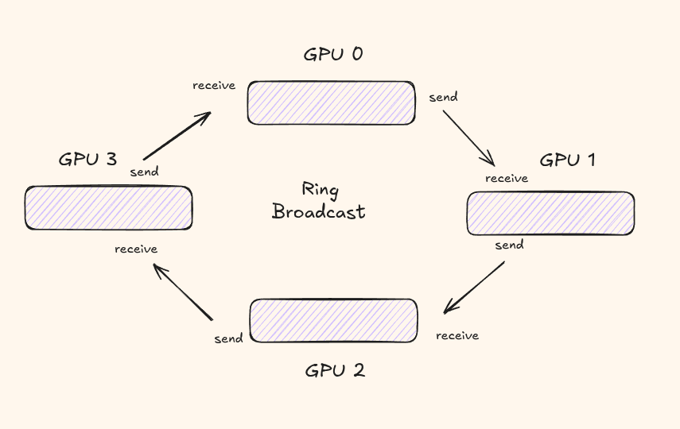

As you scale your training or inference to multiple GPUs, you need to find a way to communicate across these GPUs. Libraries like NCCL specialized in providing optimized primitives to communicate across GPUs and these are called collective communication.
Now the type and volume of message shared across the GPUs differ a lot in training vs inference but the primitives remain the same. In this post, we will cover all the important collective primitives you need to start scaling to multiple GPUs!
Communication Model
The latency of communication (between GPUs and/or nodes) can be modeled as:
$$\alpha + n\beta, \quad \beta = \frac{1}{B}$$
where:
- α is the initial cost of setting up the connection
- β represents the inverse bandwidth
- n is the message size
- B is the bandwidth
Small Message Size (α >> nβ): Latency (α) dominates; the focus is on reducing communication latency.
Large Message Size (α << nβ): Bandwidth utilization (nβ) dominates; the focus is on maximizing bandwidth.
Communication Algorithms
There are two major algorithms to implement the collective algorithms - MST and Ring algorithm.
Minimum Spanning Tree (MST)
MST algorithm is designed to be very efficient for smaller messages, ie: for models that prioritize low latency. It uses a spanning tree structure to enforce minimal rounds of data transfer but doesnot fully utilize the available bandwidth. It assumes a network where each node can communicate with only one other node at a time.
Dont worry if this doesn't make sense yet, we will look at a example comparing both MST and ring and try to understand the tradeoffs shortly.
Ring
In ring algorithm, each GPU is organized in a ring like fashion and communicates only with its two neighbors at once.
- Message Split - A large message is split into equal N chunks. Each of the P GPUs in the ring gets N/P data.
- Data Transfer - Each GPU moves its chunk to its next immediate neighbor. Each GPU receives a chunk from the left neighbor and sends a chunk to the right neighbor.
- Efficiency - Every GPU performs computation simultaneously and bandwidth is always occupied.
Now as promised, lets look at an example where we want to send a message from one GPU to all the other GPUs in the node.
Broadcast in MST

Here we have a setup of 6 GPUs trying to send its data to all the others GPUs in the group.
- Round 1 - GPU 0 sends to GPU 1 and 2.
- Round 2 - GPU 1 sends to GPU 3.
- Round 3 - GPU 2 sends to GPU 4 and 5.
- Total Rounds of Communication - log(6) = 2.5
Broadcast in Ring

- Round 1 - GPU 0 sends to GPU 1.
- Round 2 - GPU 1 sends to GPU 2.
- Round 3 - GPU 2 sends to GPU 3.
- Total Rounds of Communication = N - 1 = 3
You can see how MST immediately optimizes for latency where the rounds of communication are lesser compared to ring algorithms. Ring algorithms on the other hand focusses on improving the bandwith utilization by chunking its data and always having every single node performing something.
When it comes to ML systems both for training and inference setup, most of the messages are bandwith bound, because we have to more around massive weights, activations, tensor shards etc.
Cool, now that we have the intuition locked down, its time to understand the collective communications.
Wrapping Up
With all of this you should be able to understand the different collective primitives and the tradeoffs of using each operation and scale your experiments beyond a single GPU.
In the next couple of blogs, I will focus more on distributed techniques and more production ready libraries like torchtitan.